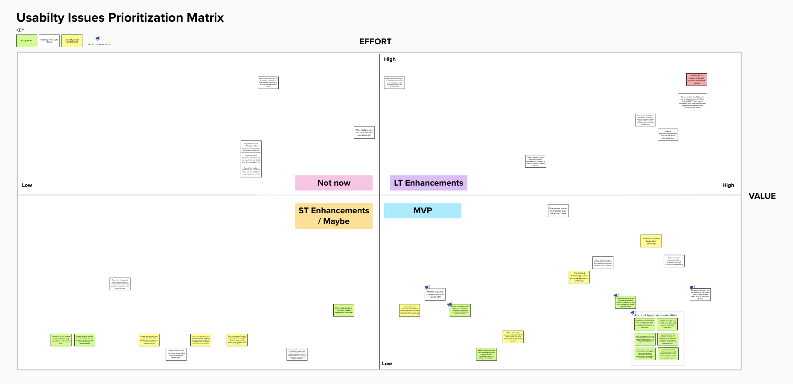

User research ▪ Interaction design ▪ Service design
Overview
In 2019, U.S. Citizenship and Immigration Services announced a new online registration system for the 2021 H-1B cap season.
The H-1B is a nonimmigrant visa that enables employers to hire highly skilled foreign workers. Each year, employers submit petitions to a lottery where
approximately 50% are randomly selected to be adjudicated. Rather than investing significant cost and effort upfront, USCIS proposed a new system where
employers will first register for the lottery and then submit a petition if selected.
As a product designer on myUSCIS, the online platform for filing immigration benefits, I was tasked to design the end-to-end experience for the H-1B registration.
Registrant account homepage
Discovery
The H-1B registration introduced two new user groups to the myUSCIS product: employment-based attorneys and employers. I partnered with our researcher to plan
and facilitate contextual inquiries with attorneys. We discovered that employment-based attorneys organized cases by benefits, prioritized work by deadlines,
and collaborated in teams with multiple roles.
I lead the creation of the research artifacts: archetypes, user journey map, and a future state H-1B blueprint to visualize key touchpoints USCIS communication and
training initiatives.
Employment-based representative journey map
Since communication prior to the registration period would be critical to shaping their expectations and mental model, I tailored and shared findings on user roles,
requirements and timeline to USCIS public engagement teams.
H-1B future state blueprint
Design
I facilitated a kickoff with the team to define goals, requirements, project plan, and measurable outcomes. While the H-1B working group translated policy into
feature requirements, I created several user and process flows to map high-level sequence of tasks and interactions and align myUSCIS with external stakeholders.
Registration case card
Using the existing design system, I built and iterated on wireframes for the account, filing, and case management stages of the experience, identifying where the
registration posed unique design challenges and surfaced potential global enhancements.
Usability Testing
I lead two rounds of usability testing and engaged the whole team by inviting along as note-takers. Then, I facilitated a workshop where we sorted the findings along a
value and effort matrix and ideated on the issues identified for MVP.

Usability issues prioritization matrix
Development
As an embedded designer on a development team, I supported implementation of the in 2-week sprints for several months through sprint planning, groomings, and desk checks.
Requirements continuously shifted with USCIS policy and dependencies on external systems, so I worked closely with our business analyst and product manager to prioritize
features in the backlog and revise design and copy.
Retrospective
My role on myUSCIS marked my first time designing as the sole designer on a scrum team. I learned how to operate 2 week sprint cycles and communicate with developers.
I gained a better understanding of how developers thought and incorporated timing, edge cases, and various states (i.e. empty and loading) into my design process.